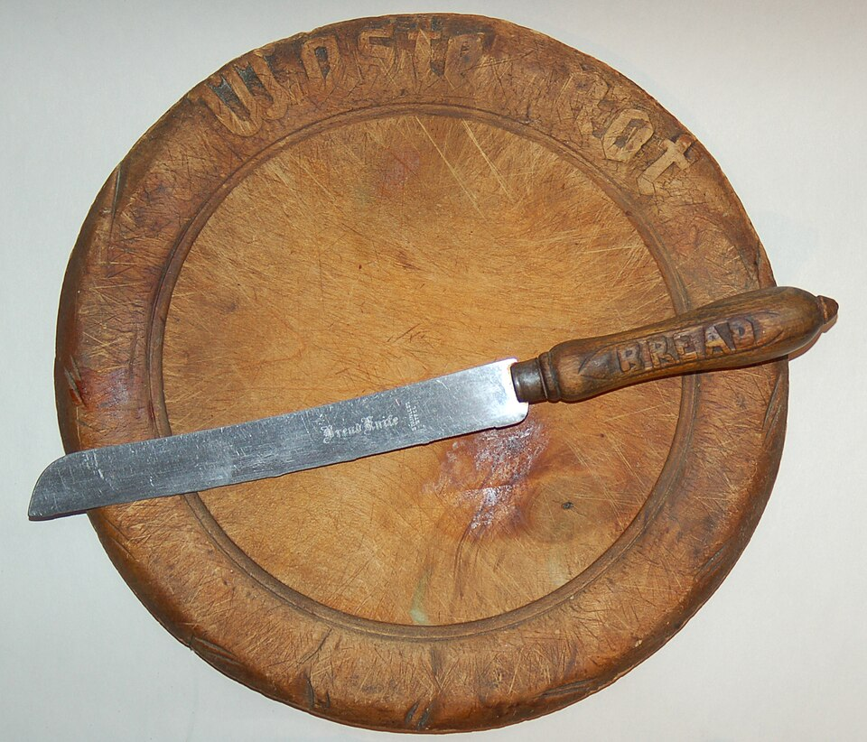
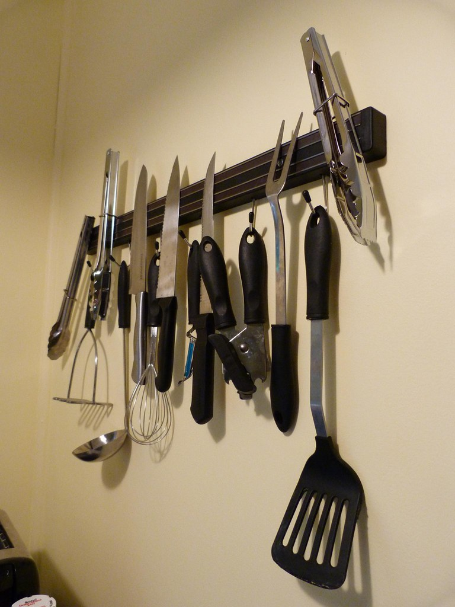

Dishwashers are a knife's worst enemy. Harsh detergents erode handles and damage edge geometry. The high-pressure water jet moves knives around, chipping edges against other utensils. Heat from drying cycles can loosen handle rivets. Always hand-wash with mild dish soap immediately after use. Dry immediately — don't let water sit on carbon steel blades even for minutes.
Water causes oxidation, especially on carbon steel and at the bolster/handle junction where water collects. Dry with a clean towel immediately after washing. Carbon steel knives: apply a thin coat of food-safe mineral oil or camellia oil after drying if storing for extended periods. Stainless steel is more forgiving but still benefits from prompt drying.

Wood (end grain or edge grain): best for edges — the fibers part and close. End grain boards are the most gentle. Edge grain is good. Plastic (HDPE or polypropylene): acceptable, easy to sanitize, but harder than wood and dulls edges faster. Gets deep grooves that harbor bacteria. Bamboo: very hard, dulls edges quickly — avoid. Glass/ceramic/stone: the worst — instantly destroys edges. Never cut on a plate.

Magnetic strip (best): displays knives accessibly, protects edges, no contact. Mount at an angle so the spine hits first, not the edge. Knife block (good): protects edges, but horizontal slots accumulate debris and can abrade edges. In-drawer with blade guards: safe if guards are used consistently. Never loose in a drawer — blades contact other utensils and dull rapidly. Blade roll for transport.
Never: use a knife as a screwdriver or can-opener (obvious but happens), pry with the tip, use a glass or ceramic cutting surface, store in a block with other metal utensils touching, scrape the blade edge-down across a cutting board (use the spine to scrape), twist the knife when it's stuck in food. The tip and edge are the most vulnerable parts — protect them.
Carbon steel knives develop a patina — a dark, mottled oxide layer that paradoxically protects the steel from further oxidation and prevents reactive flavors from transferring to food. Accelerate patina: slice an onion or potato and leave juice on blade for 30 minutes. The patina takes 2–4 weeks of regular use to fully form. Never use on raw fish before patina develops — it will smell.